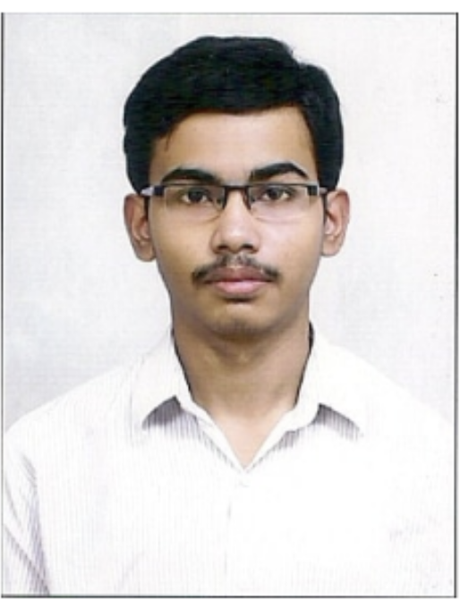

I completed my MS in Computer Science from Georgia Tech. My coursework heavily focused on distributed computing, advanced operating systems, and database architecture. Prior to that, I earned my BTech in ECE with a minor in Computer Science from IIT Kharagpur.
During my tenure as a Software Engineer at Microsoft, I dedicated over three years to optimizing Azure storage systems. I directly contributed to the fault tolerance and scalability of Azure Managed Disks, successfully maintaining 99.999% availability for 50K disks per cluster region. Additionally, my work on Azure Blob Management involved engineering high-throughput producer-consumer architectures capable of processing billions of blobs daily.
More recently, I interned as an Autonomous Network Fabric Intern at Nokia in Sunnyvale. There, I designed and deployed cloud-native, LLM-driven agentic AI systems using Kubernetes to dramatically accelerate complex CI/CD deployment pipelines.
My academic and research projects center around high-performance systems, infrastructure orchestration and runtime kernel-layer security. At the Embedded Pervasive Lab at Georgia Tech, I investigated methods for hiding cold-start latencies for FaaS clusters deployed on the Edge. I also developed a linearizable, sharded KV-store service inspired by Google Spanner, utilizing PAXOS for strong data consistency. At IIT Kharagpur, I developed a Linux kernel module to achieve runtime security by monitoring syscall executions.
While my full resume contains a comprehensive list of my technical background, below are some of the key platforms, languages, and tools I use most frequently in my day-to-day engineering workflows: